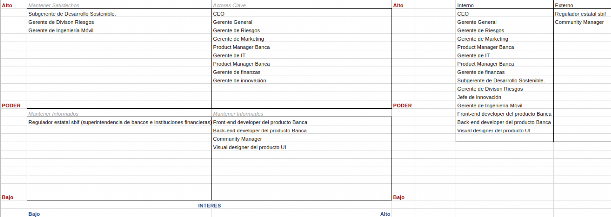
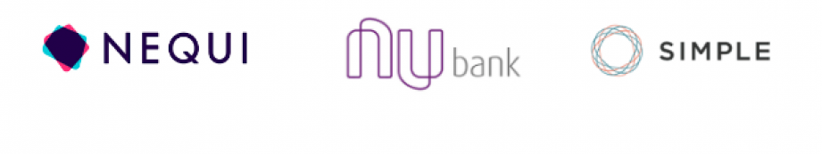
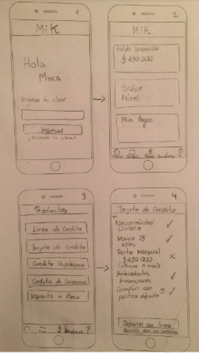
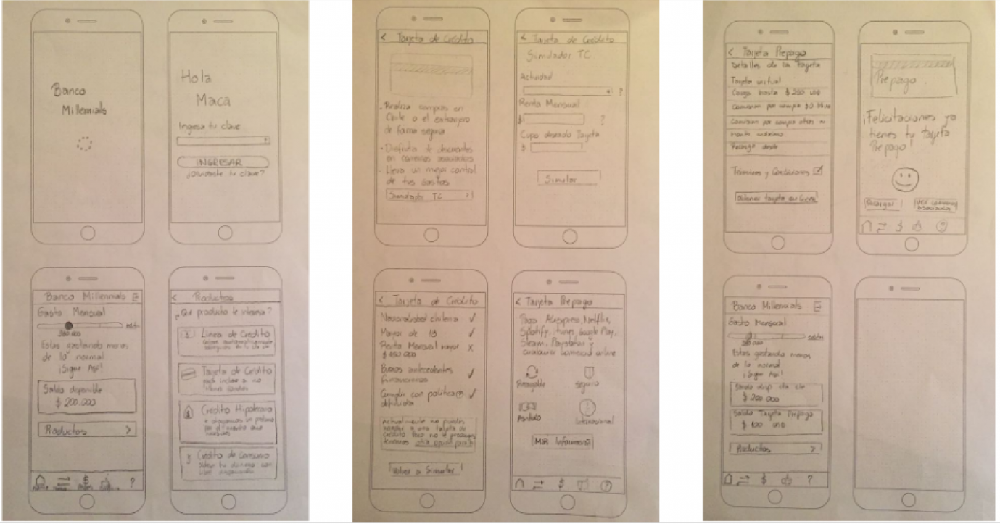
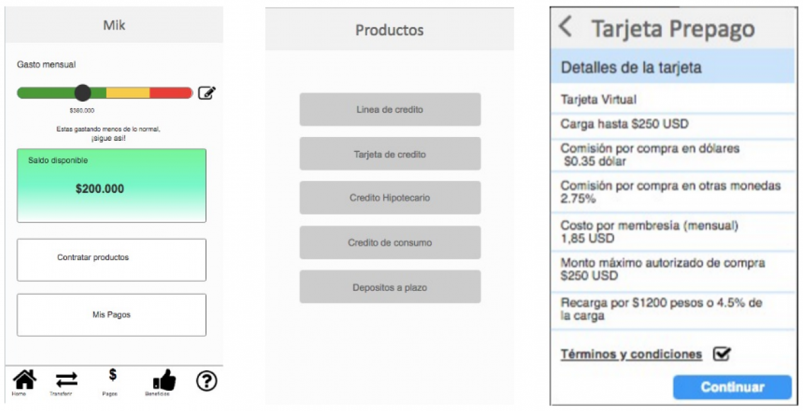
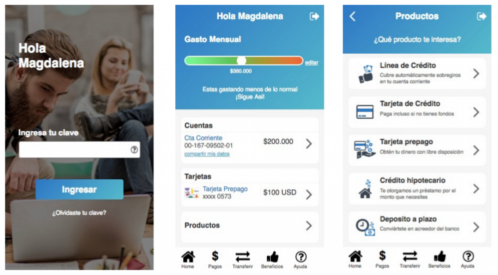

.PNG)
Mi Sitio

OBJETIVOS
Este proyecto llamado “MI SITIO”, consiste en llegar de mejor manera a los clientes nuevos y más jóvenes del Banco del País, un banco tradicional que se ha propuesto crear una plataforma 100% digital dirigido a los usuarios categorizados Millennieals que no se encuentran conformes con el servicio.
El propósito es entenderlos, saber que les gusta y que no, de la forma que interactúan con sus finanzas actualmente, entender bien cuales son sus gustos y preferencias.
Se realizó una serie de entrevistas a jóvenes pertenecientes a esta generación, que no llevaran más de 1 año ½ en el banco. Se utilizó la metodología Lean Ux.
PLAN DE TRABAJO
Se partio definiendo a los stakeholders y sus requerimientos. Se planeó una reunión de kick off para presentar de manera global los objetivos y planes a cumplir y dar inicio al proyecto.

BENCHMARK
Podemos obtiener información útil que nos ayudará a tener una mayor organización y buscar nuevas ideas, y así llegar a realizar mejoras y cambios apropiados.
GUIA DE ENTREVISTA
¿qué podemos hacer para que nuestros clientes se sientan conformes con nuestro servicio y no querer irse? La idea es entender a los clientes nuevos y jóvenes de nuestro del banco. Saber qué esperan del servicio que les vamos a entregar, por lo que se realizó una guía de entrevista para conocer a los usuarios.
Se conversó con personas que cumplían con el requisito, gente nacida entre 1980 a 1990 y que estuvieran alrededor de un año en un banco. Fueron 11 personas entrevistadas, mujeres y hombres de distintas edades, profesiones e intereses.
PROPUESTA DE VALOR
Para poder sacar la propuesta de valor, nos planteamos las preguntas principales e hipótesis de una posible solución. Y así poder empezar con un producto.
Como propuesta de valor tenemos:
- Dar a conocer de manera fácil los requisitos necesarios para subir de nivel en el banco.
- Digitalizar los trámites bancarios.
- Transmitir seguridad al usuario.
- Acortar el tiempo de transacción.
- La capacidad de ahorro.
SKETCH
Se empieza a idear y a realizar los primeros bocetos de la aplicación móvil.
En este paso, investigamos que podría ser más atractivo para los usuarios querer ingresar a nuestra aplicación y quedarse en ella, nuestra opción fue incorporar “GAMIFICATION”, pero una vez testeado, no se entendía muy bien el propósito por lo que iteramos el producto, sacándolo.
Comenzamos el prototipado en Axure, donde una vez terminado, lo testeamos con 4 de los usuarios que entrevistamos la primera vez
Y tuvimos que seguir realizando cambios ya que seguían sin entenderse algunos puntos. Terminamos el segundo producto, donde fue testeado e iterado por el stakeholder, Como resultado de esto salió nuestro producto final
CONCLUSION
Se trabajó con la metodología Lean Ux, refinar de manera progresiva, rápida y eficiente la oferta de valor para los usuarios. Se creó una hipótesis, se validó y se testeó la usabilidad. Ya que se tenía conocimiento de la forma en que pensaban los usuarios, se pudo modificar el diseño, realizando los cambios correspondientes para obtener un producto mínimo viable (MVP). Finalmente se testeó por úlitma vez, entendiendo el modelo de negocio, la rigurosidad con la que se aplican ciertas técnicas de UX, muchas veces puede hacer más difícil proveer respuestas rápidas y valiosas.
PARA VER EL TRABAJO COMPLETO HAZ CLICK ACA